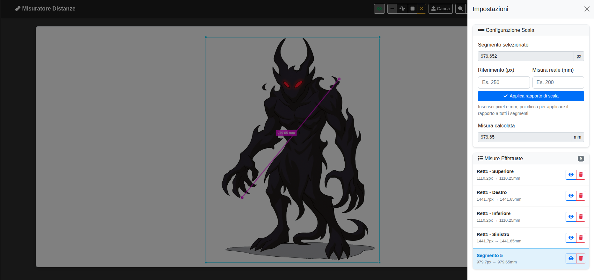
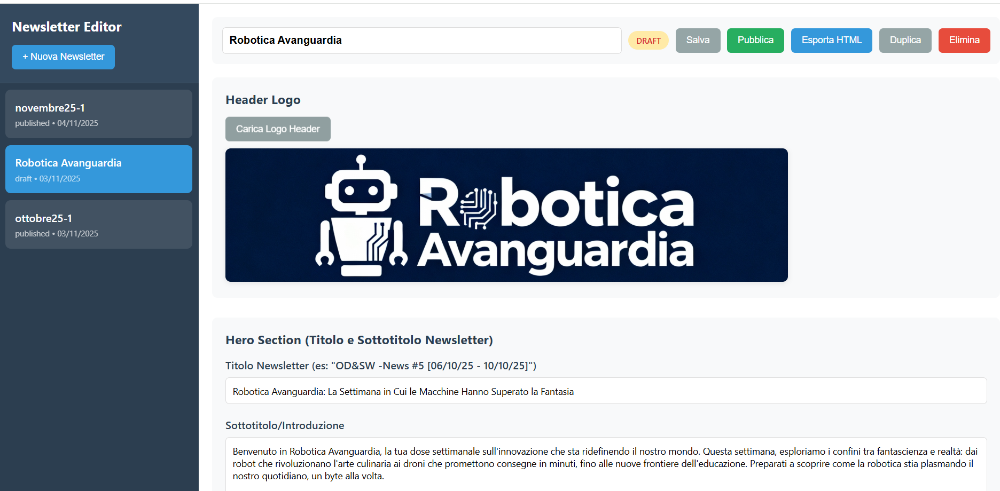

Hey there 👋
My name is Miyamotodan
A SME and Team Leader with a passion for data-governance, data-integration, and creating solutions for complex problems. Currently leading the "Open Data & Semantic Web" practice at a big company.
About Me
A closer look at what I do
As a SME and Team Leader, I have been involved in data-governance and data-integration initiatives based on Semantic Technologies for central and local public administration clients.
Get to know me!
It's Miyamotodan. Hey there! I'm a SME (Subject Matter Expert) and Team Leader based in Rome. My experience centers on managing complex remote projects, specifically initiatives involving Open Data and Linked Open Data for public administration clients. I have solid expertise in Object-Oriented (OO) analysis and development, proficiently utilizing models such as UML, Entity-Relationship (ER) Diagrams, and OWL.
I currently lead the "Open Data & Semantic Web" practice. I enjoy experimenting with web programming to create interfaces and services that explore and visualize Knowledge Graphs. My curiosity for technology has led me, over the years, to use and analyze hundreds of web and mobile applications across various industries and verticals.
Beyond technology, I cultivate a deep passion for Martial Arts and Eastern Culture, a journey spanning over three decades. You can discover more about my martial arts path here.
Feel free to contact me here.
ContactMy Skills
Personal Projects
Things I've built for fun
This section lists some of my personal projects done as hobbies unrelated to my professional activity, projects for personal productivity or for fun.

NEWSLETTER
Tool for making a newsletter with two kind of post (single and double column).
Case Study